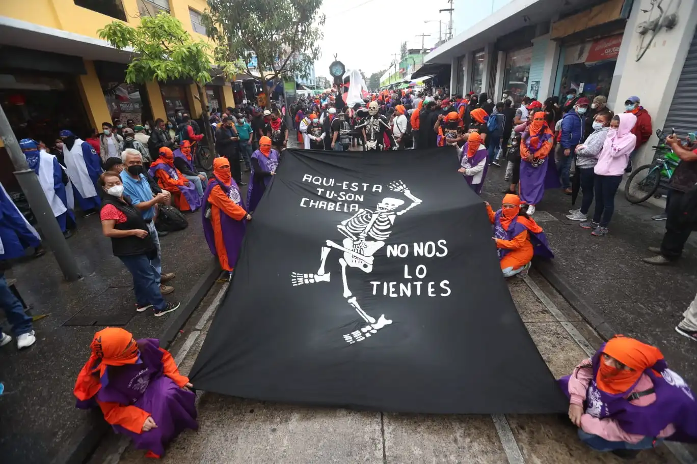
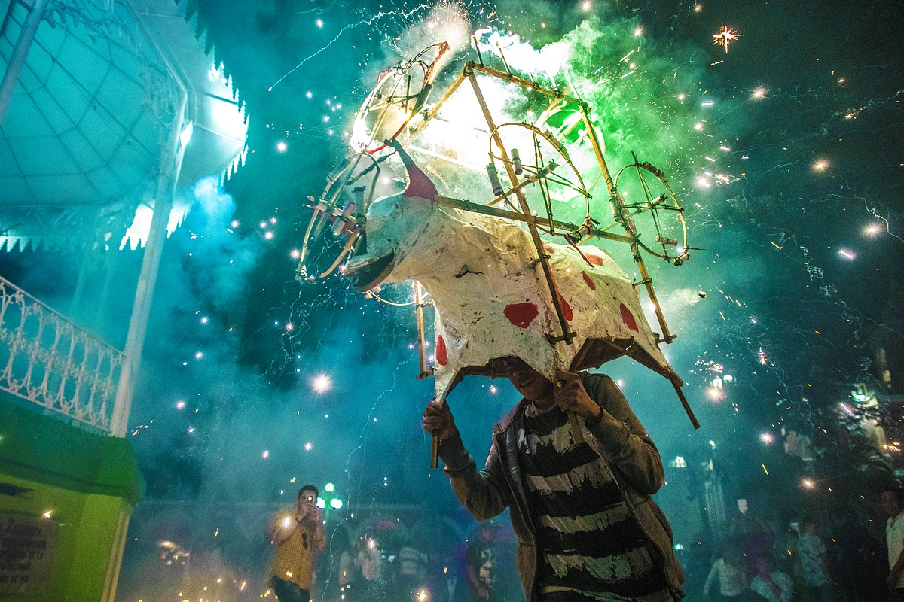

Los barriletes gigantes de Guatemala es una tradición y costumbre que se celebra tanto en Sumpango como en Santiago Sacatepéquez. Se tiene muy poca información que establezca una fecha de su inicio. Según algunos historiadores, se cree que fue durante el final del siglo XIX y principios de siglo XX.
Conoce más de los barriletes
La Huelga de Dolores es una tradición de la Universidad de San Carlos de Guatemala USAC. Se lleva a cabo a través de un desfile bufo que cada año en el Viernes de Dolores hace su recorrido principal en la Sexta Avenida de la Zona 1, Ciudad de Guatemala.

La Quema del Torito se originó después de la Conquista de los españoles, cuando introdujeron los juegos pirotécnicos para las celebraciones religiosas. En la actualidad, comúnmente se observa para algún cortejo procesional.
Esta tradición se puede apreciar en los municipios de cada departamento del país y es celebrada por diferentes culturas guatemaltecas.
